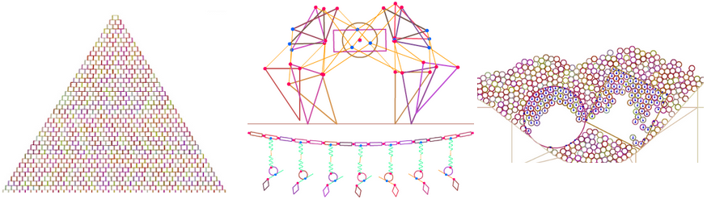

Nape is a powerful, fast, and friendly 2D Rigid Body physics engine for AS3/Haxe. Nape is open-source and free to use for personal and commercial projects. Available for AS3 through .swc libraries and Haxe via haxelib.
Features:
- Rigid Body physics with Buoyancy and a variety of Constraints.
- Convex-Polygon and Circle shape types.
- Powerful, high-level Callbacks system.
- Pixels as units of distance.
- Continuous Collisions/Sensing to avoid tunnelling.
- An API that reports errors when used incorrectly. (Error checking and reporting disabled for release builds.)
- Automatic handling of sleeping/waking, no general need to ever wake a Body manually.
- Friendly, expressive API that uses a lazy implementation to avoid excessive calculations.
- Fast!
- Memory conscious implementation, no GC activity when used correctly!
- Numerically stable Geometric utilities including Convex Decompositions.
- Ability to create new Constraints without modifying Nape source. Through the symbolic module, can prototype new constraints using a high-level language specified at run-time.
- All positional-constraints, including user-defined ones can be made elastic or stiff.